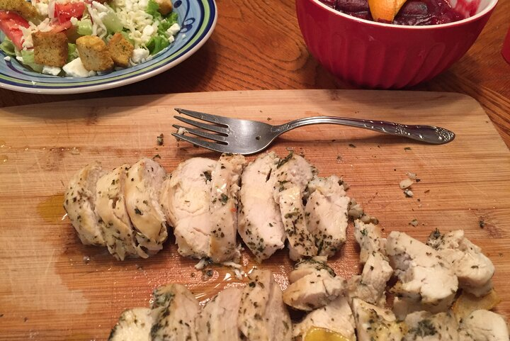

Sous Vide Chicken

Chicken - because we can't always eat burgers and pizza
Sometimes you just need to eat a little healthier. Chicken will help you with that. And cooking it sous vide will help you actually like chicken.
Follow the easy steps below to make your own chicken and get to being healthy with your friends and family.
Recipe found here.
Let's get started!
Ingredients
- 2 chicken breasts (sous vide)
- 1 head romaine lettuce (rinsed and chopped)
- Caesar dressing
- grated Parmesan cheese
- croutons (optional)
Steps
- Cook the chicken using a sous vide method. If you don't know how to do this, watch a YouTube video.
- Grill the sous vide chicken breasts on each side for 30 seconds to 1 minute, then dice or slice it on a cutting board.
- In a medium bowl, toss the desired amount of dressing with the lettuce, diced sous vide chicken breast, parmesan cheese and croutons if using them.
Return to recipe page.